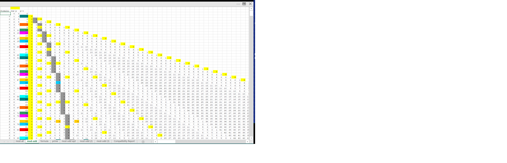

---
title: my home page title
layout: default
---
<div class="blurb">
<!-- ##################### -->	
<!-- --> 


    	
		

	     <h4>Right Turn<em> look for *fam sub keys </em>. </h4>
<p> 
Look in Chapter 5 of 
 <a href="https://cashfields.github.io/TioCash/10_PDF/TioCash.pdf">Tio Cash.pdf</a>
for the logic to use the *fam sub-keys and index to the right 'just another 30 away' .
<p>



<!--           	
<a href=”https://www.example.com/sample.pdf#page=20″>link text</a>
-->   


        	
<!-- ##################### -->	
</div><!-- /.blurb -->
